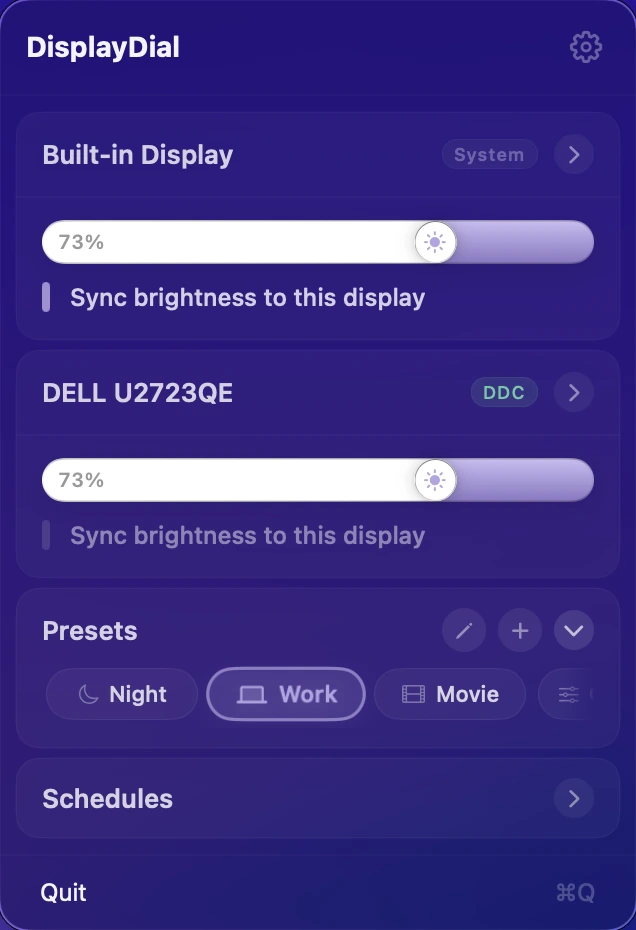
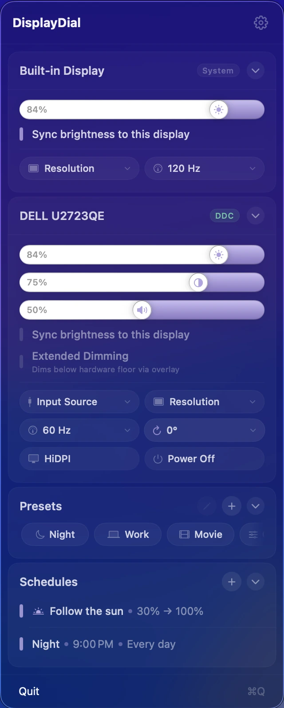
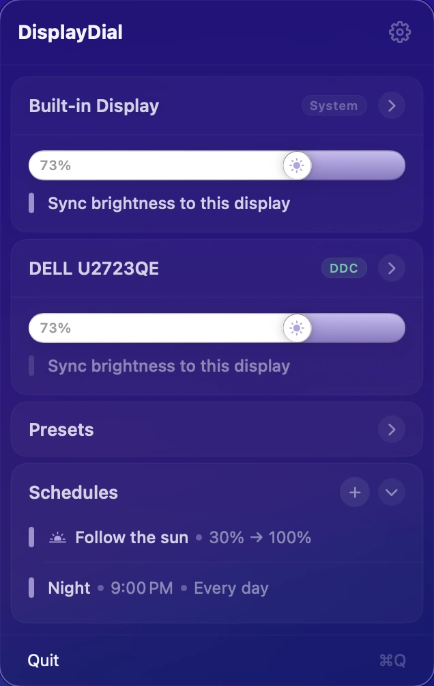
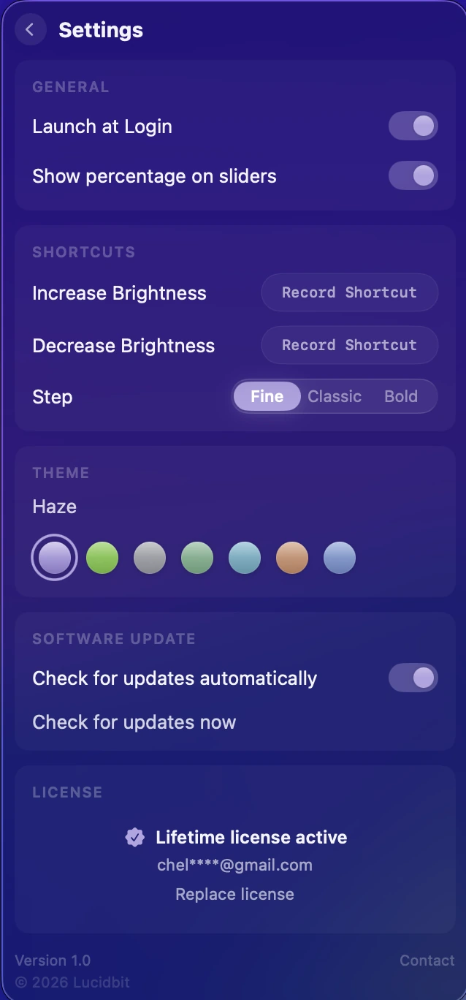

DISPLAY CONTROL
Your monitors, finally controllable.
Brightness, contrast, and volume for every connected display — no joystick, no submenus. Hardware control from the menu bar, presets for every context, and brightness that follows the sun.

Save your ideal brightness, contrast, and volume for each context. One tap applies everything across all connected displays at once. Trigger any preset from a keyboard shortcut without opening the menu.

Brightness, contrast, volume — plus resolution, refresh rate, rotation, and input. Everything the joystick menu buries, laid out in one menu bar card. DisplayDial talks directly to your monitor's hardware, so the backlight actually changes. No joystick, no OSD, no squinting.

Schedule any preset at clock time, sunrise, or sunset. Or turn on Follow the Sun — brightness moves along the solar curve all day without a single tap. Touch a slider and it steps aside until morning.

Launch at login, custom brightness shortcuts, and step sizes tuned to how you nudge. Pick a theme to match your desktop, keep your license close, and let updates arrive quietly. Set it up once, then it stays out of your way.
Core Features
DDC/CI changes the monitor's actual backlight — the same thing its buttons do, without the buttons.
Drags, presets, schedules — every change is a paced, eased transition. Adjust brightness at 2am and nothing flashes.
Three sliders per external display, one for the built-in. Brightness, contrast, and volume — in one place, not three submenus deep.
Build a preset once. Trigger it by name or cycle through all of them with a global keyboard shortcut — without opening the menu.
Brightness moves along the solar curve all day — dimmer at dawn, brightest at noon, easing toward dusk. Touch a slider and it steps aside until sunrise.
Dim at sunset. Brighten at your start time. Fire any preset at clock time, sunrise, or sunset — up to five schedules, per weekday.
One slider moves all. Sync locks your displays together — even when macOS quietly resets external brightness after sleep or login.
Go darker than your monitor's minimum. A software dimmer takes over seamlessly when the hardware can't go further — no visible handoff, no flicker.
Resolution, refresh rate, rotation, input source, power off — with a safety net. Risky changes revert automatically if you don't confirm.
Global hotkeys step brightness on every display at once — Fine, Classic, or Bold increments.
No analytics, no telemetry, no phone-home. What you adjust stays between you and your display.
$6.99 once. Every future update is yours. No subscription, no tiers, no annual fee.
DisplayDial puts every display's controls in your menu bar: brightness, contrast, and speaker volume for external monitors via true DDC hardware control, plus the built-in display through native macOS APIs. Every change glides — no jumps, no steps — the same feel as Apple's own brightness keys, on monitors Apple doesn't control.
Yes. On supported monitors DisplayDial speaks DDC/CI — the same protocol the buttons on the monitor use — so the backlight itself changes, not a software overlay. Displays that don't support DDC fall back to a high-quality gamma dimmer automatically.
A built-in schedule that moves brightness along the solar curve: dimmer at sunrise, brightest at solar noon, easing back down by sunset, holding your night level after dark. You choose the night and day anchors; the curve does the rest. Any manual adjustment pauses it until the next sunrise.
Yes — every connected display gets its own card with independent controls, and you can designate one display as the sync leader so the others follow its brightness.
Most external monitors connected via DisplayPort, HDMI, or USB-C support DDC/CI — the protocol DisplayDial uses to talk to hardware. If your monitor's physical buttons change brightness, DisplayDial almost certainly can too. Monitors that don't support DDC fall back to a high-quality software dimmer automatically. Built-in displays use native macOS control and always work.
Yes — native arm64. No Rosetta, no background services, no login items beyond the menu bar icon. Runs on macOS 14 (Sonoma) or later.
No. $6.99 once, with a 7-day free trial. One purchase, all future updates.